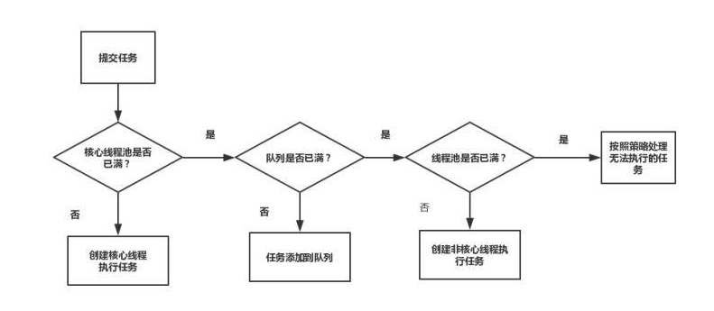

原文连接:https://www.cnblogs.com/secbro/p/12051473.html
在Java面试中，线程池相关知识，虽不能说是必问提，但出现的频次也是非常高的。同时又鉴于公众号“程序新视界”的读者后台留言让写一篇关于Java线程池的文章，于是就有本篇内容，本篇将基于Java线程池的原理、实现以及相关源码进行讲解等。
什么是线程池
线程池是一种多线程处理形式，处理过程中将任务提交到线程池，任务的执行交由线程池来管理。
为了充分利用CPU多核资源，应用都会采用多线程并行/并发计算，最大限度的利用多核提升应用程序性能。
试想一下，如果每个请求都执行一遍创建线程、执行任务、销毁线程，那么对服务器资源将是一种浪费。在高并发的情况下，甚至会耗尽服务器资源。
线程池的主要作用有两个：不同请求之间重复利用线程，无需频繁的创建和销毁线程，降低系统开销和控制线程数量上限，避免创建过多的线程耗尽进程内存空间，同时减少线程上下文切换次数。
常见面试题
- 说说Java线程池的好处及实现的原理？
- Java提供线程池各个参数的作用，如何进行的?
- 根据线程池内部机制，当提交新任务时，有哪些异常要考虑？
- 线程池都有哪几种工作队列？
- 使用无界队列的线程池会导致内存飙升吗？
- 说说几种常见的线程池及使用场景?
线程池的创建与使用
在JDK5版本中增加了内置线程池实现ThreadPoolExecutor，同时提供了Executors来创建不同类型的线程池。Executors中提供了以下常见的线程池创建方法：
- newSingleThreadExecutor：一个单线程的线程池。如果因异常结束，会再创建一个新的，保证按照提交顺序执行。
- newFixedThreadPool：创建固定大小的线程池。根据提交的任务逐个增加线程，直到最大值保持不变。如果因异常结束，会新创建一个线程补充。
- newCachedThreadPool：创建一个可缓存的线程池。会根据任务自动新增或回收线程。
- newScheduledThreadPool：支持定时以及周期性执行任务的需求。
- newWorkStealingPool：JDK8新增，根据所需的并行层次来动态创建和关闭线程，通过使用多个队列减少竞争，底层使用ForkJoinPool来实现。优势在于可以充分利用多CPU，把一个任务拆分成多个“小任务”，放到多个处理器核心上并行执行；当多个“小任务”执行完成之后，再将这些执行结果合并起来即可。
虽然在JDK中提供Executors类来支持以上类型的线程池创建，但通常情况下不建议开发人员直接使用（见《阿里巴巴java开发规范》）。
线程池不允许使用Executors去创建，而是通过ThreadPoolExecutor的方式，这样的处理方式让写的同学更加明确线程池的运行规则，规避资源耗尽的风险。
Executors部分方法的弊端：
- newFixedThreadPool和newSingleThreadExecutor主要问题是堆积的请求处理队列可能会耗费非常大的内存，甚至OOM。
- newCachedThreadPool和newScheduledThreadPool:主要问题是线程数最大数是Integer.MAX_VALUE，可能会创建数量非常多的线程，甚至OOM。
同时，阿里巴巴java开发规范中推荐了3种线程池创建方式。
方式一，引入commons-lang3包。
//org.apache.commons.lang3.concurrent.BasicThreadFactory
ScheduledExecutorService executorService = new ScheduledThreadPoolExecutor(1,
new BasicThreadFactory.Builder().namingPattern("example-schedule-pool-%d").daemon(true).build());方式二，引入com.google.guava包。
ThreadFactory namedThreadFactory = new ThreadFactoryBuilder()
.setNameFormat("demo-pool-%d").build();
//Common Thread Pool
ExecutorService pool = new ThreadPoolExecutor(5, 200,
0L, TimeUnit.MILLISECONDS,
new LinkedBlockingQueue<Runnable>(1024), namedThreadFactory, new ThreadPoolExecutor.AbortPolicy());
pool.execute(()-> System.out.println(Thread.currentThread().getName()));
pool.shutdown();//gracefully shutdown方式三，spring配置线程池方式：自定义线程工厂bean需要实现ThreadFactory，可参考该接口的其它默认实现类，使用方式直接注入bean，调用execute(Runnable task)方法即可。
<bean id="userThreadPool"
class="org.springframework.scheduling.concurrent.ThreadPoolTaskExecutor">
<property name="corePoolSize" value="10" />
<property name="maxPoolSize" value="100" />
<property name="queueCapacity" value="2000" />
<property name="threadFactory" value= threadFactory />
<property name="rejectedExecutionHandler">
<ref local="rejectedExecutionHandler" />
</property>
</bean>
// in code
userThreadPool.execute(thread);ThreadPoolExecutor的构造方法
除了以上推荐的创建线程池的方法，还可以通过ThreadPoolExecutor的构造方法，直接创建线程池。本质上来讲，以上方法最终也是创建了ThreadPoolExecutor对象，然后堆积进行包装处理。
ThreadPoolExecutor提供了多个构造方法，我们最终都调用的构造方法来进行说明。
public ThreadPoolExecutor(int corePoolSize,
int maximumPoolSize,
long keepAliveTime,
TimeUnit unit,
BlockingQueue<Runnable> workQueue,
ThreadFactory threadFactory,
RejectedExecutionHandler handler) {
// 省略代码
}核心参数作用解析如下：
- corePoolSize：线程池核心线程数最大值。
- maximumPoolSize：线程池最大线程数大小。
- keepAliveTime：线程池中非核心线程空闲的存活时间大小。
- unit：线程空闲存活时间单位。
- workQueue：存放任务的阻塞队列。
- threadFactory：创建新线程的工厂，所有线程都是通过该工厂创建的，有默认实现。
- handler：线程池的拒绝策略。
程池的拒绝策略
构造方法的中最后的参数RejectedExecutionHandler用于指定线程池的拒绝策略。当请求任务不断的过来，而系统此时又处理不过来的时候，我们就需要采取对应的策略是拒绝服务。
默认有四种类型：
- AbortPolicy策略：该策略会直接抛出异常，阻止系统正常工作。
- CallerRunsPolicy策略：只要线程池未关闭，该策略直接在调用者线程中，运行当前的被丢弃的任务。
- DiscardOleddestPolicy策略：该策略将丢弃最老的一个请求，也就是即将被执行的任务，并尝试再次提交当前任务。
- DiscardPolicy策略：该策略默默的丢弃无法处理的任务，不予任何处理。
当然，除了默认的4种策略之外，还可以根据业务需求自定义拒绝策略。通过实现RejectedExecutionHandler接口，在创建ThreadPoolExecutor对象时作为参数传入即可。
在spring-integration-core中便自定义了CallerBlocksPolicy，相关代码如下：
public class CallerBlocksPolicy implements RejectedExecutionHandler {
private static final Log logger = LogFactory.getLog(CallerBlocksPolicy.class);
private final long maxWait;
public CallerBlocksPolicy(long maxWait) {
this.maxWait = maxWait;
}
public void rejectedExecution(Runnable r, ThreadPoolExecutor executor) {
if (!executor.isShutdown()) {
try {
BlockingQueue<Runnable> queue = executor.getQueue();
if (logger.isDebugEnabled()) {
logger.debug("Attempting to queue task execution for " + this.maxWait + " milliseconds");
}
if (!queue.offer(r, this.maxWait, TimeUnit.MILLISECONDS)) {
throw new RejectedExecutionException("Max wait time expired to queue task");
} else {
if (logger.isDebugEnabled()) {
logger.debug("Task execution queued");
}
}
} catch (InterruptedException var4) {
Thread.currentThread().interrupt();
throw new RejectedExecutionException("Interrupted", var4);
}
} else {
throw new RejectedExecutionException("Executor has been shut down");
}
}
}线程池的执行
创建完成ThreadPoolExecutor之后，当向线程池提交任务时，通常使用execute方法。execute方法的执行流程图如下：

- 如果线程池中存活的核心线程数小于线程数corePoolSize时，线程池会创建一个核心线程去处理提交的任务。
- 如果线程池核心线程数已满，即线程数已经等于corePoolSize，一个新提交的任务，会被放进任务队列workQueue排队等待执行。
- 当线程池里面存活的线程数已经等于corePoolSize了,并且任务队列workQueue也满，判断线程数是否达到maximumPoolSize，即最大线程数是否已满，如果没到达，创建一个非核心线程执行提交的任务。
- 如果当前的线程数达到了maximumPoolSize，还有新的任务过来的话，直接采用拒绝策略处理。
源代码分析
下面看一下JDK8中ThreadPoolExecutor中execute方法的源代码实现：
public void execute(Runnable command) {
if (command == null)
throw new NullPointerException();
// 线程池本身的状态跟worker数量使用同一个变量ctl来维护
int c = ctl.get();
// 通过位运算得出当然线程池中的worker数量与构造参数corePoolSize进行比较
if (workerCountOf(c) < corePoolSize) {
// 如果小于corePoolSize，则直接新增一个worker，并把当然用户提交的任务command作为参数，如果成功则返回。
if (addWorker(command, true))
return;
// 如果失败，则获取最新的线程池数据
c = ctl.get();
}
// 如果线程池仍在运行，则把任务放到阻塞队列中等待执行。
if (isRunning(c) && workQueue.offer(command)) {
// 这里的recheck思路是为了处理并发问题
int recheck = ctl.get();
// 当任务成功放入队列时，如果recheck发现线程池已经不再运行了则从队列中把任务删除
if (! isRunning(recheck) && remove(command))
//删除成功以后，会调用构造参数传入的拒绝策略。
reject(command);
// 如果worker的数量为0（此时队列中可能有任务没有执行），则新建一个worker（由于此时新建woker的目的是执行队列中堆积的任务，
// 因此入参没有执行任务，详细逻辑后面会详细分析addWorker方法）。
else if (workerCountOf(recheck) == 0)
addWorker(null, false);
}
// 如果前面的新增woker，放入队列都失败，则会继续新增worker，此时线程池的状态是woker数量达到corePoolSize，阻塞队列任务已满
// 只能基于maximumPoolSize参数新建woker
else if (!addWorker(command, false))
// 如果基于maximumPoolSize新建woker失败，此时是线程池中线程数已达到上限，队列已满，则调用构造参数中传入的拒绝策略
reject(command);
}下面再看在上述代码中调用的addWorker方法的源代码实现及解析：
private boolean addWorker(Runnable firstTask, boolean core) {
// 这里有一段基于CAS+死循环实现的关于线程池状态，线程数量的校验与更新逻辑就先忽略了，重点看主流程。
//...
boolean workerStarted = false;
boolean workerAdded = false;
Worker w = null;
try {
// 把指定任务作为参数新建一个worker线程
w = new Worker(firstTask);
// 这里是重点w.thread是通过线程池构造函数参数threadFactory生成的woker对象
// 也就是说这个变量t就是代表woker线程。绝对不是用户提交的线程任务firstTask。
final Thread t = w.thread;
if (t != null) {
final ReentrantLock mainLock = this.mainLock;
mainLock.lock();
try {
// 加锁之后仍旧是判断线程池状态等一些校验逻辑。
int rs = runStateOf(ctl.get());
if (rs < SHUTDOWN ||
(rs == SHUTDOWN && firstTask == null)) {
if (t.isAlive())
throw new IllegalThreadStateException();
// 把新建的woker线程放入集合保存，这里使用的是HashSet
workers.add(w);
int s = workers.size();
if (s > largestPoolSize)
largestPoolSize = s;
workerAdded = true;
}
} finally {
mainLock.unlock();
}
if (workerAdded) {
// 然后启动woker线程
// 该变量t代表woker线程，会调用woker的run方法
t.start();
workerStarted = true;
}
}
} finally {
if (! workerStarted)
// 如果woker启动失败，则进行一些善后工作，比如说修改当前woker数量等
addWorkerFailed(w);
}
return workerStarted;
}addWorker方法主要做的工作就是新建一个Woker线程，加入到woker集合中。在上述方法中会调用到Worker类的run方法，并最终执行了runWorker方法。
// Woker类实现了Runnable接口
public void run() {
runWorker(this);
}
final void runWorker(Worker w) {
Thread wt = Thread.currentThread();
// task就是Woker构造函数入参指定的任务，即用户提交的任务
Runnable task = w.firstTask;
w.firstTask = null;
w.unlock();
boolean completedAbruptly = true;
try {
//一般情况下，task都不会为空（特殊情况上面注释中也说明了），因此会直接进入循环体中
//这里getTask方法是要重点说明的，它的实现跟我们构造参数设置存活时间有关
//我们都知道构造参数设置的时间代表了线程池中的线程，即woker线程的存活时间，如果到期则回收woker线程，这个逻辑的实现就在getTask中。
//来不及执行的任务，线程池会放入一个阻塞队列，getTask方法就是去阻塞队列中取任务，用户设置的存活时间，就是
//从这个阻塞队列中取任务等待的最大时间，如果getTask返回null，意思就是woker等待了指定时间仍然没有
//取到任务，此时就会跳过循环体，进入woker线程的销毁逻辑。
while (task != null || (task = getTask()) != null) {
w.lock();
if ((runStateAtLeast(ctl.get(), STOP) ||
(Thread.interrupted() &&
runStateAtLeast(ctl.get(), STOP))) &&
!wt.isInterrupted())
wt.interrupt();
try {
//该方法是个空的实现，如果有需要用户可以自己继承该类进行实现
beforeExecute(wt, task);
Throwable thrown = null;
try {
//真正的任务执行逻辑
task.run();
} catch (RuntimeException x) {
thrown = x; throw x;
} catch (Error x) {
thrown = x; throw x;
} catch (Throwable x) {
thrown = x; throw new Error(x);
} finally {
//该方法是个空的实现，如果有需要用户可以自己继承该类进行实现
afterExecute(task, thrown);
}
} finally {
//这里设为null，也就是循环体再执行的时候会调用getTask方法
task = null;
w.completedTasks++;
w.unlock();
}
}
completedAbruptly = false;
} finally {
//当指定任务执行完成，阻塞队列中也取不到可执行任务时，会进入这里，做一些善后工作，比如在corePoolSize跟maximumPoolSize之间的woker会进行回收
processWorkerExit(w, completedAbruptly);
}
}woker线程的执行流程就是首先执行初始化时分配给的任务，执行完成以后会尝试从阻塞队列中获取可执行的任务，如果指定时间内仍然没有任务可以执行，则进入销毁逻辑。这里只会回收corePoolSize与maximumPoolSize直接的那部分woker。
execute与submit的区别
执行任务除了可以使用execute方法还可以使用submit方法。它们的主要区别是：execute适用于不需要关注返回值的场景，submit方法适用于需要关注返回值的场景。
异常处理
当执行任务时发生异常，那么该怎么处理呢？首先看当Thread线程异常如何处理。
在任务中通过try...catch是可以捕获异常并进行处理的，如下代码：
Thread t = new Thread(() -> {
try {
System.out.println(1 / 0);
} catch (Exception e) {
LOGGER.error(e.getMessage(), e);
}
});
t.start();如果很多线程任务默认的异常处理机制都是相同的，可以通过Thread类的UncaughtExceptionHandler来设置线程默认的异常处理机制。
实现UncaughtExceptionHandler接口，并调用Thread#setUncaughtExceptionHandler(UncaughtExceptionHandler)方法。如果想设置为全局默认异常处理机制，则可调用Thread#setDefaultUncaughtExceptionHandler(UncaughtExceptionHandler)方法。
ThreadGroup默认提供了异常处理机制如下：
public void uncaughtException(Thread t, Throwable e) {
if (parent != null) {
parent.uncaughtException(t, e);
} else {
Thread.UncaughtExceptionHandler ueh =
Thread.getDefaultUncaughtExceptionHandler();
if (ueh != null) {
ueh.uncaughtException(t, e);
} else if (!(e instanceof ThreadDeath)) {
System.err.print("Exception in thread \""
+ t.getName() + "\" ");
e.printStackTrace(System.err);
}
}
}ThreadPoolExecutor的异常处理机制与Thread是一样的。同时，ThreadPoolExecutor提供了uncaughtExceptionHandler方法来设置异常处理。如下示例：
public class ThreadPool {
public static void main(String[] args) {
ThreadFactory namedThreadFactory = new ThreadFactoryBuilder()
.setNameFormat("demo-pool-%d")
.setUncaughtExceptionHandler(new LogUncaughtExceptionHandler())
.build();
ExecutorService pool = new ThreadPoolExecutor(5, 200,
0L, TimeUnit.MILLISECONDS,
new LinkedBlockingQueue<Runnable>(1024), namedThreadFactory, new ThreadPoolExecutor.AbortPolicy());
pool.execute(() -> {
throw new RuntimeException("测试异常");
});
pool.shutdown();
}
static class LogUncaughtExceptionHandler implements Thread.UncaughtExceptionHandler {
@Override
public void uncaughtException(Thread t, Throwable e) {
System.out.println("打印LogUncaughtExceptionHandler中获得的异常信息:" + e.getMessage());
}
}
}但需要注意的是使用UncaughtExceptionHandler的方法只适用于execute方法执行的任务，而对submit方法是无效。submit执行的任务，可以通过返回的Future对象的get方法接收抛出的异常，再进行处理。这也算是execute方法与submit方法的差别之一。
线程池中常见的队列
线程池有以下工作队列：
- ArrayBlockingQueue：有界队列，是一个用数组实现的有界阻塞队列，按FIFO排序量。
- LinkedBlockingQueue：可设置容量队列，基于链表结构的阻塞队列，按FIFO排序任务，容量可以选择进行设置，不设置的话，将是一个无边界的阻塞队列，最大长度为Integer.MAX_VALUE，吞吐量通常要高于ArrayBlockingQuene；newFixedThreadPool线程池使用了这个队列。
- DelayQueue：延迟队列，是一个任务定时周期的延迟执行的队列。根据指定的执行时间从小到大排序，否则根据插入到队列的先后排序。newScheduledThreadPool线程池使用了这个队列。
- PriorityBlockingQueue：优先级队列，是具有优先级的无界阻塞队列。
- SynchronousQueue：同步队列，一个不存储元素的阻塞队列，每个插入操作必须等到另一个线程调用移除操作，否则插入操作一直处于阻塞状态，吞吐量通常要高于LinkedBlockingQuene，newCachedThreadPool线程池使用了这个队列。
关闭线程池
关闭线程池可以调用shutdownNow和shutdown两个方法来实现。
shutdownNow：对正在执行的任务全部发出interrupt()，停止执行，对还未开始执行的任务全部取消，并且返回还没开始的任务列表。
shutdown：当我们调用shutdown后，线程池将不再接受新的任务，但也不会去强制终止已经提交或者正在执行中的任务。
参考文章：
https://www.jianshu.com/p/5df6e38e4362
https://juejin.im/post/5d1882b1f265da1ba84aa676
原文链接：《面试题-关于Java线程池一篇文章就够了》